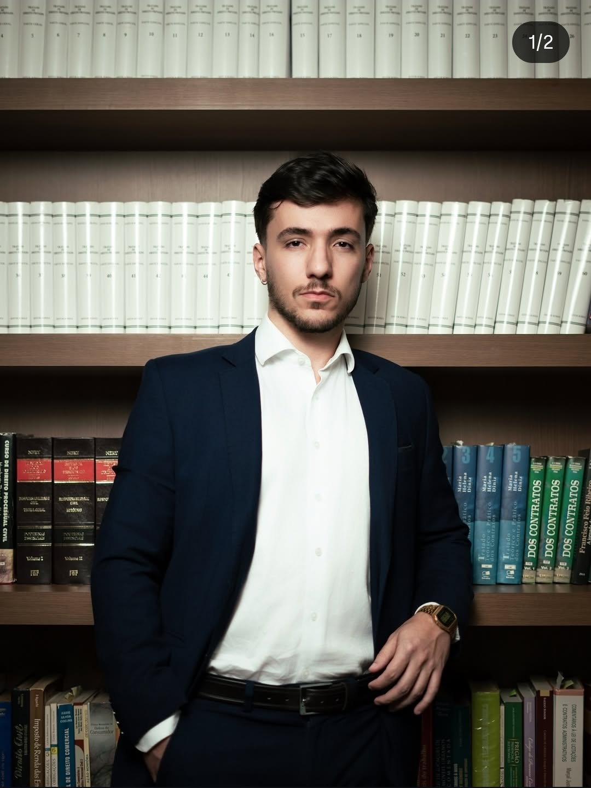
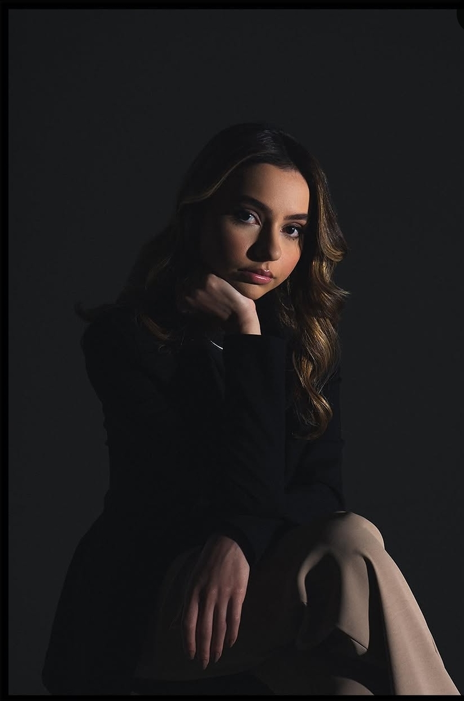

Juscelino
Bertoncini
OAB/PR 000.000
Direito de família e compliance. Monta as regras internas que evitam que o problema chegue ao tribunal.
Juscelino Bertoncini e Beatriz Mendonça. Explicamos o que está acontecendo antes de agir, e seguimos explicando depois.
Falar pelo WhatsAppQuem procura um advogado chega com medo de duas coisas: perder algo que importa e não conseguir acompanhar o que estão decidindo por você.
A segunda se resolve já na primeira conversa. Você recebe em português claro o que existe, o que é possível fazer, quanto tempo costuma levar e quanto custa. Só depois disso o caso anda.
Duas áreas confirmadas com os sócios. As demais entram quando eles definirem.

OAB/PR 000.000
Direito de família e compliance. Monta as regras internas que evitam que o problema chegue ao tribunal.

OAB/PR 000.000
Bio a escrever com ela, depois da conversa que ainda não aconteceu.
Não existe camada intermediária entre você e o seu processo. São dois sócios, e o contato é direto com eles, do começo ao fim.
Do primeiro contato até o caso andar, o caminho é o mesmo para todo mundo.
Pelo WhatsApp ou pelo formulário, do seu jeito. Não existe questionário longo nem triagem automática.
Por vídeo, ou presencial em Maringá se você preferir. Nela ouvimos a história inteira antes de opinar.
Em português claro, antes de qualquer compromisso. Se não valer a pena entrar com o processo, dizemos isso também.
Cada movimentação chega para você, inclusive quando a notícia é que nada mudou.
O que escrevemos para quem não é da área. Um assunto por vez, sem citação de artigo de lei que ninguém precisa decorar.
 Família
Família
8 de setembro6 min de leitura
1 de setembro5 min de leitura
22 de agosto8 min de leitura
Família
14 de agosto7 min de leitura
Sem promoção, sem novidade do escritório. Só o assunto que estiver pegando mais gente de surpresa naquele mês.
Depende do caso. Na primeira conversa entendemos a situação e informamos o valor antes de você assumir qualquer compromisso.
Você envia uma mensagem contando o que aconteceu. Respondemos marcando uma conversa por vídeo. Nela você recebe as opções, os prazos e o custo. Se decidir seguir, assumimos o caso e informamos cada movimentação, inclusive quando a notícia é que nada mudou.
Não. O atendimento é online, por mensagem e por chamada de vídeo, e isso cobre todas as etapas do caso. Quando um encontro presencial for necessário, combinamos o lugar em Maringá.
Varia com a vara e com a complexidade. Você recebe uma estimativa realista, com a ressalva de que prazo de tribunal não depende de advogado.
Sim. O processo tramita online na maior parte do tempo, então atendemos clientes de outras cidades do Paraná.
Segunda a sexta, das 9h às 18h. Fora do horário a mensagem fica registrada.